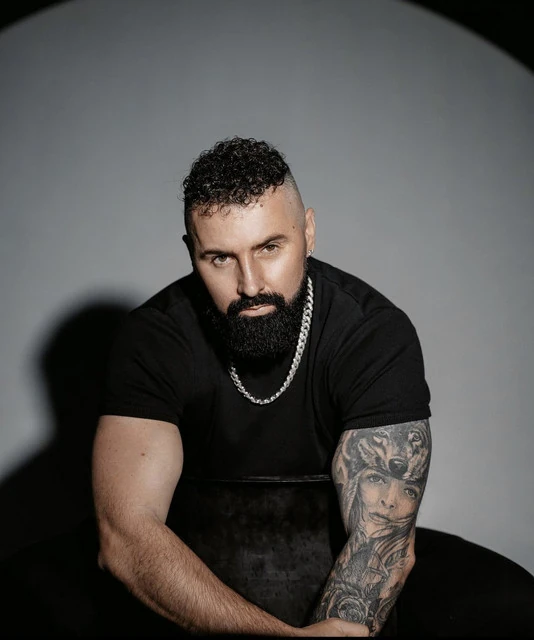

Jasmin Fazlić (rođen 16. oktobra 1986), poznatiji kao Jala Brat je bosanskohercegovački reper, kantautor i producent. Širu popularnost je stekao učešćem na Eurosongu 2016. godine sa pjesmom Ljubav je, koju je koautorski napisao sa Almirom Ajanovićem. Do sada je objavio nekoliko studijskih albuma i poznat je po uspješnoj saradnji sa reperom Bubom Corellijem, te pjevačicom Mayom Berović.
Amar Hodžić (Sarajevo, 22. rujna 1989.), poznat kao Buba Corelli, bosanskohercegovački je reper, pjevač i producent. Poznat je i pod pseudonimom Amar Lee Jenkins.
Jasmin Fazlić je rođen u Sarajevu gdje je završio osnovnu i srednju školu. Prve korake u muzičkoj karijeri napravio je početkom 2000. godine kada snima svoje prve demo snimke. Ubrzo shvata da je rep muzički žanr kojim se želi baviti. U sklopu svog kućnog studija nastaju njegove prve autorske pjesme, koje tada objavljuje u užem krugu prijatelja, a kao sinonim uzima svoj dotadašnji nadimak Jala. U početku, Jala je radio sam, a potom je 2011. godine okupio ekipu Blunt Blyon sa kojom je sarađivao nešto ozbiljnije, te sa kojom je radio na svom prvom albumu Replay, koji je tada i objavljen. Nakon objave albuma kreće razvoj njegove muzičke karijere kao repera. Od 2012. godine, Jala na jednom od svojih koncerata upoznaje sarajevskog repera Amara Hodžića, koji je u to vrijeme bio poznat po učešću u rep grupi Duo Corelli, po kojoj je nešto kasnije dobio svoj puni nadimak Buba Corelli. Te iste godine, Jala i Buba počinju sarađivati zajedno, kako kroz muziku, tako i kroz nastupe. Njegovu muziku u to vrijeme karakteriše ozbiljan rap i hip hop, te svoje pjesme počinje objavljivati na YouTube kanalu Imperia kojeg su u to vrijeme njih dvojica zajednički preuzeli. Nakon izbacivanja albuma Reply, Jala radi na novom materijalu, te sarađuje sa reperima kao što su Frenkie, Sajfer, Mayer, Klijent i Buba Corelli. Snima ukupno 10 pjesama i izbacuje album pod nazivom Riječ na riječ[5], koji izlazi 12. juna 2012. godine. Krajem 2012. godine, zajedno sa Bubom i Kontrom gostuje na pjesmi RMX koja je objavljena na albumu Troyanac tuzlanskog repera Frenkija za koju rade i video spot. Pjesma nailazi na dobre kritike, što Jalu dodatno lansira na muzičku scenu. U periodu 2012–2013. objavljuje dva EP albuma pod nazivom SA Sin City koji snima zajednički sa Bubom, te Mahala koji snima sa reperom Shtelom. Oba albuma ne nailaze na medijsku pažnju, nakon čega Jala odlučuje da svoju muziku usmjeri ka nešto komercijalnijoj varijanti. Te iste godine upoznaje sarajevskog pjevača i producenta Almira Ajanovića, koji odlučuje da ga muzički producira u svom studiju Tempo.
Poznat je po svom stilu i brzini rapa. Pisao je i pjevao rap pjesme od mlade dobi. Još kao tinejdžer Corelli je volio hip-hop i bio član sarajevske podzemne hip-hop grupe G Recordz. Objavio je pjesmu Oh No još 2011. Pjesma je postala viralna. Ubrzo je upoznao Jasmina Fazlića, odnosno Jalu Brata. Njih dvoje počeli su surađivati i snimili album Sin City u ožujku 2013. Uslijedio je i popularni album Pakt s Đavolom objavljen u prosincu 2014. koji sadržava hitove poput Bez tebe, 22 i Borba. Surađivao je i s popularnim srpskim reperom Rastom objavivši pjesmu Habibi krajem 2015. Godine 2016. na YouTubeu je objavio sve pjesme s albuma Kruna (s Jala Bratom) koji uključuje hitove Sporije, Restart, Dokaz, Klinka i druge te singl Comfort koji lansira u prodaju iste godine. Pokretač ili predmet rasprave nekih bizarnih tema.